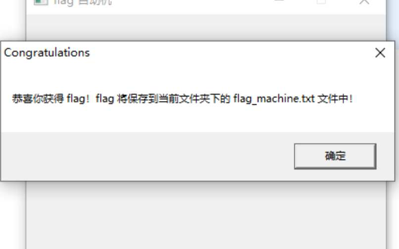

解密第一道二进制程序题
- 作者:
- 淡白
- 创建时间：
- 2022-11-02 16:00:21
- ctf 反汇编 二进制
摘要：这是作者第一次参加CTF比赛，参加了Hackergame 2022赛事，并分享了自己解决的一道二进制题目。题目是一个自动点击的程序，但按钮位置在鼠标移动过程中会随机改变位置。作者通过分析程序代码，找到了代码中使用的Win32API函数SetWindowPos，并修改了其中的参数，使按钮位置不再随机变动。接着，作者继续查找相关代码，找到了弹出消息框的部分，并在汇编代码中修改了跳转条件，以实现反转跳转的效果。最终，作者成功得到了Flag。在解题过程中，作者借助了静态分析工具Ghidra以及自己对Windows编程的一些基础知识。
第一次参加ctf
在摸鱼之余发现了Hackergame 2022 抽空玩了一下只做出来一道二进制题目和一些web题目以及0道数学题。 还是挺有意思的。
Flag 自动机
下载题目解压得到 flag_machine.exe 之前我使用od调试，由于对od不是很熟就没解出来。
后面我用静态分析工具 ghidra 做出来的。
运行flag_machine.exe出现如下窗口应该是要点击按钮狠心夺取，但是在鼠标移动到按钮边缘就会随机移动一个位置。
这随机移动位置应该是调用了win32api中的SetWindowPos通过查找引用找到相关代码如下：
查询了下这个api的参数:
//声明:
SetWindowPos(
hWnd: HWND; {窗口句柄}
hWndInsertAfter: HWND; {窗口的 Z 顺序}
X, Y: Integer; {位置}
cx, cy: Integer; {大小}
uFlags: UINT {选项}
): BOOL;
//hWndInsertAfter 参数可选值:
HWND_TOP = 0; {在前面}
HWND_BOTTOM = 1; {在后面}
HWND_TOPMOST = HWND(-1); {在前面, 位于任何顶部窗口的前面}
HWND_NOTOPMOST = HWND(-2); {在前面, 位于其他顶部窗口的后面}
//uFlags 参数可选值:
SWP_NOSIZE = 1; {忽略 cx、cy, 保持大小}
SWP_NOMOVE = 2; {忽略 X、Y, 不改变位置}
SWP_NOZORDER = 4; {忽略 hWndInsertAfter, 保持 Z 顺序}
SWP_NOREDRAW = 8; {不重绘}
SWP_NOACTIVATE = $10; {不激活}
SWP_FRAMECHANGED = $20; {强制发送 WM_NCCALCSIZE 消息, 一般只是在改变大小时才发送此消息}
SWP_SHOWWINDOW = $40; {显示窗口}
SWP_HIDEWINDOW = $80; {隐藏窗口}
SWP_NOCOPYBITS = $100; {丢弃客户区}
SWP_NOOWNERZORDER = $200; {忽略 hWndInsertAfter, 不改变 Z 序列的所有者}
SWP_NOSENDCHANGING = $400; {不发出 WM_WINDOWPOSCHANGING 消息}
SWP_DRAWFRAME = SWP_FRAMECHANGED; {画边框}
SWP_NOREPOSITION = SWP_NOOWNERZORDER;{}
SWP_DEFERERASE = $2000; {防止产生 WM_SYNCPAINT 消息}
SWP_ASYNCWINDOWPOS = $4000; {若调用进程不拥有窗口, 系统会向拥有窗口的线程发出需求}
发现 uFlags 有个值可以忽略xy，
现在程序中 SetWindowPos(DAT_0040b020,(HWND)0x2,iVar1 % 0x96,iVar2 % 0x96,0x50,0x19,0); uFlags是0只需要把它改成2就好了
在汇编中找到代码位置
修改为0x2 后导出运行程序。
虽然成功点击了按钮但是确弹出了一个新的消息框。
消息框的api是MessageBoxW继续查找相关引用
找到如下相关代码：
void UndefinedFunction_00401510(HWND param_1,UINT param_2,WPARAM param_3,int param_4)
{
uint uVar1;
HFONT wParam;
char *_Str;
FILE *_File;
size_t _Count;
if (param_2 == 2) {
PostQuitMessage(0);
}
else if (param_2 == 0x111) {
if ((short)param_3 == 2) {
PostQuitMessage(0);
}
if ((short)param_3 == 3) {
if (param_4 == 0x1bf52) {
_Str = FUN_00401f8a();
MessageBoxW(param_1,
L"恭喜你获得 flag！flag 将保存到当前文件夹下的 flag_machine.txt 文件中！"
,L"Congratulations",0);
_File = fopen("flag_machine.txt","w");
if (_File == (FILE *)0x0) {
MessageBoxW(param_1,L"文件打开错误！",L"Error",0);
free(_Str);
/* WARNING: Subroutine does not return */
exit(-1);
}
_Count = strlen(_Str);
fwrite(_Str,1,_Count,_File);
fclose(_File);
free(_Str);
}
else {
MessageBoxW(param_1,L"获取 flag 失败！您不是本机的 “超级管理员” ！",
L"Error",0);
}
}
}
else if (param_2 == 1) {
DAT_0040b020 = CreateWindowExW(0,L"Button",L"狠心夺取",0x50000000,0x55,0x96,0x50,0x19,
param_1,(HMENU)0x3,(HINSTANCE)0x0,(LPVOID)0x0);
DAT_0040b024 = CreateWindowExW(0,L"Button",L"放手离开",0x50000000,0xb9,0x96,0x50,0x19,
param_1,(HMENU)0x2,(HINSTANCE)0x0,(LPVOID)0x0);
DAT_0040b028 = CreateWindowExW(0,L"Static",(LPCWSTR)PTR_DAT_00409004,0x50000000,0x55,100,300,
0x14,param_1,(HMENU)0x1,(HINSTANCE)0x0,(LPVOID)0x0);
uVar1 = GetWindowLongA(param_1,-0x10);
SetWindowLongA(param_1,-0x10,uVar1 & 0xfffeffff);
wParam = CreateFontW(0xc,0,0,0,400,0,0,0,0x86,0,0,2,0x12,L"宋体");
SendMessageA(param_1,0x30,(WPARAM)wParam,1);
SendMessageA(DAT_0040b020,0x30,(WPARAM)wParam,1);
SendMessageA(DAT_0040b024,0x30,(WPARAM)wParam,1);
SendMessageA(DAT_0040b028,0x30,(WPARAM)wParam,1);
}
DefWindowProcW(param_1,param_2,param_3,param_4);
return;
}
看来目前是进到了 if ((short)param_3 == 3)的if中但是(param_4 != 0x1bf52)所以弹出了这个消息框。
找到相关汇编判断代码：
0040180a 81 7d 14 CMP dword ptr [EBP + 0x14],0x1bf52
52 bf 01 00
00401811 74 2d JZ LAB_00401840
这里用的跳转是 JZ 为零则跳转 那么可以改为 JNZ 不为零则跳转。实现了取反的效果。
再次导出运行：  成功得到flag
之前对汇编不是很熟所以做的过程中也不是很顺利。借助了ghidra 这款好用的静态分析工具才完成。还好之前写过一些windows程序对win32还有点印象。